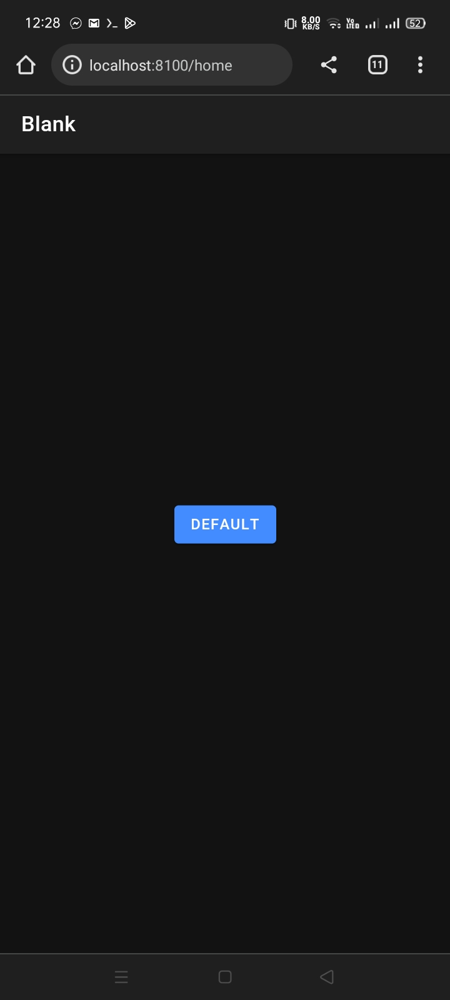

The beautiful, open source framework for developing hybrid mobile apps with HTML5.
$ npm install -g ionic
_ _
(_) (_)
_ ___ _ __ _ ___
| |/ _ \| '_ \| |/ __|
| | (_) | | | | | (__
|_|\___/|_| |_|_|\___| CLI
- Quickly start a project with starter templates
- Boilerplate app structure ready for customization
- Start a local dev server with LiveReload
- Build and run native apps
Web Technologies You Already Know and Love


More Platforms, No Problems.


What Operating System you need?
- Windows?
- Linux?
- or a Mobile Device?
“Performance Obsessed”
- Create stunning, flexible UIs for all major app platforms from a single shared codebase.
“Cross-platform”
- Built to be fast by default—with hardware accelerated transitions, and touch-optimized gestures.
“Beautifully Designed”
- Cohesive visual system
- Clean and simple
- Easy to customize
It's Not 2012 Anymore
Mobile devices have rapidly improved!
So What Do We Need?
- An Open Source Framework
- Help bridging the gap between web and native
- Rich, native-style UI components and interactions
- UI APIs, not just jQuery widgets
- A dedicated, community-driven spirit
“Hello.”
Best Friends With AngularJS
- UI Components are AngularJS Directives
- Ready to work with your app
Ionicons

Over 600 MIT licensed font-icons included
MIT LICENSED
Free to use (even commercially)
COMMUNITY POWERED
Active developer forum and GitHub repo
Native or HTML5
Native
- Fast
- iOS and Android
HTML5
- slow
- complex
HTML5 Button

ionic Button
Default